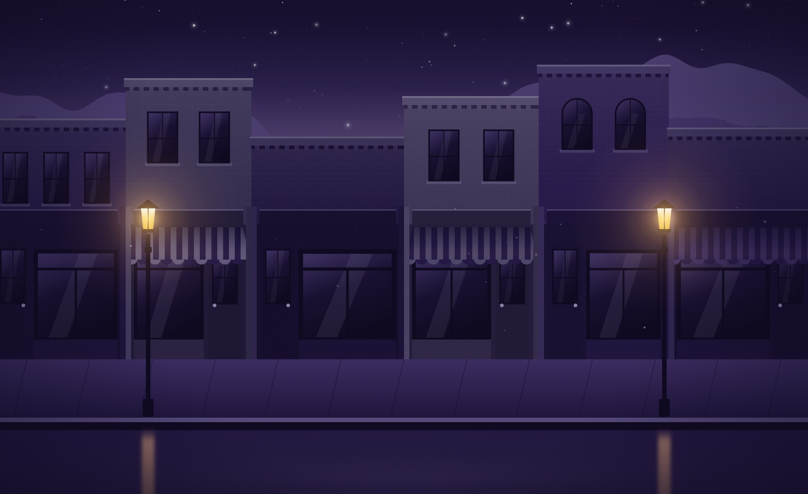

After
II · The door
— 16/56
The block, before and after
the lights came on.
Before · the lens shows
after
Hold click. The lens grows.
Drag to look. Tap for the whole block.
Kodak, TN · 35.97° N, 83.62° W